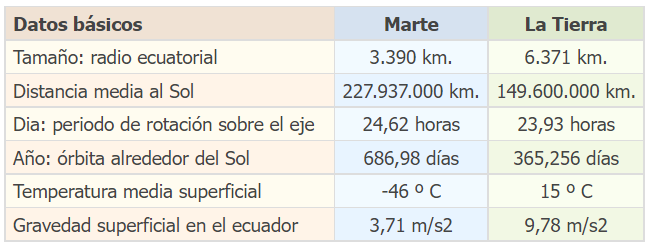

MARTE
Marte es un planeta desértico y frío. Es la mitad del tamaño de la Tierra, y también recibe el nombre de "planeta rojo". Es rojo por el hierro oxidado que tiene en el suelo.
Cuando se halla más cerca de la Tierra, a unos 55 millones de kilómetros, Marte es, después de la Luna, Venus y Júpiter, el objeto más brillante en el cielo nocturno. Puede observarse más fácilmente cuando se forma la línea recta Sol-Tierra-Marte (es decir, cuando está en oposición) y se encuentra cerca de la Tierra, cosa que pasa una vez cada 15 años. Ocurrió por última vez el 31 de julio de 2018, cuando se le vio en la constelación de Capricornio.
Índice
El origen de Marte
Las primeras observaciones de este planeta las realizo Galileo Galilei. Entre los hallazgos más importantes está el descubrimiento de masas de hielo junto con el proceso de rotación. Para cuando se llevaron a cabo estos estudios Marte estaba en oposición al Sol, y en contraste al paso del tiempo se acercó más a la Tierra.
Uno de los rumores más controversiales fue el falso hallazgo de agua en Marte, esta idea se popularizo y empezó a traer consigo la idea de una vida en este planeta. Sin embargo, fueron descubriendo que la atmosfera era demasiado delgada y contenía demasiado dióxido de carbono como para comparar un entorno semejante al de nuestro planeta.
El origen de su nombre
Su apariencia de estrella roja llevó a los astrónomos antiguos del Imperio Babilónico a llamarlo Nerpal, por el dios de la muerte y la pestilencia. Los griegos lo llamarían Ares, dios de la guerra y los romanos lo identificaron con el dios de las batallas, Marte, nombre que ha permanecido hasta nuestros días.
Características físicas de Marte
Marte tiene algunas características geológicas destacables, entre las que se incluyen: la montaña volcánica más grande del sistema solar, la Olympus Mons; volcanes en la región septentrional de Tharsis que son tan grandes que deforman la redondez del planeta; y una fosa tectónica ecuatorial gigantesca, la Valles Marineris. Este sistema de cañones tiene una longitud equivalente a la distancia entre Nueva York y Los Ángeles; el Gran Cañón de Arizona podría caber fácilmente en uno de los cañones laterales de esta gran sima.
Además, Marte tiene dos lunas pequeñas, Phobos y Deimos. Si bien nadie sabe cómo se formaron, se cree que podrían ser asteroides atrapados por la gravedad de Marte.
El tono rojizo de Marte se debe a la oxidación o corrosión. Las zonas oscuras están formadas por rocas similares al basalto terrestre, cuya superficie se ha erosionado y oxidado. Las regiones más brillantes parecen estar compuestas por material semejante, pero contienen partículas más finas, como el polvo.
El tiempo en Marte
A causa de la inclinación de su eje y la excentricidad de su órbita, los veranos marcianos son cortos y calurosos, mientras que los inviernos son largos y fríos. Enormes casquetes brillantes, en apariencia formados por escarcha o hielo, señalan las regiones polares del planeta
Un día en Marte dura 24,6 horas, un poco más que un día en la Tierra, y un año equivale a 687 días en la Tierra, casi el doble que el año terrestre
Marte y el planeta Tierra
La siguiente tabla muestra algunos datos básicos del planeta Marte comparados con los de la Tierra:

Galería de imágenes
Referencias
- Mercurio, un planeta lleno de sorpresas.
- La historia de Mercurio, el hermano menor de la Tierra
- El planeta Mercurio
- Todo sobre Mercurio
| ◄ Anterior | Siguiente ► |
| Inicio | Venus |